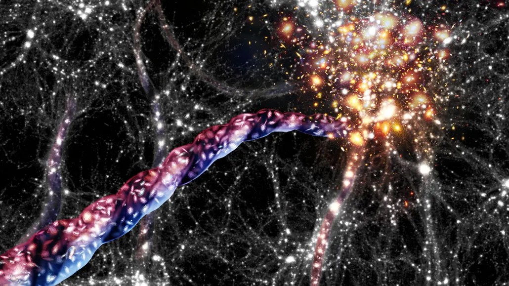
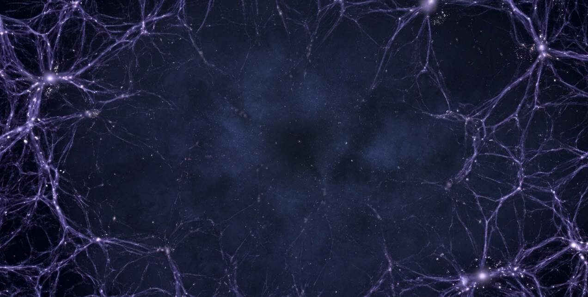
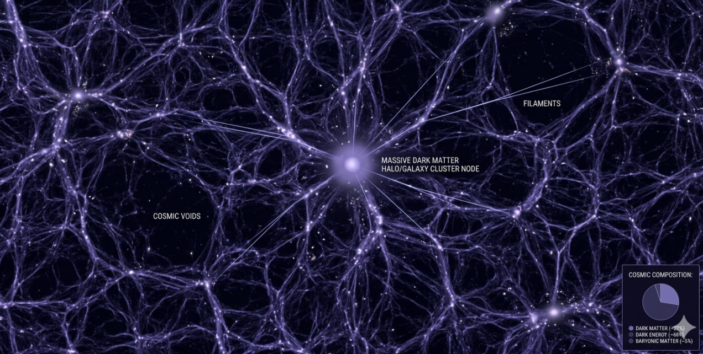

Cosmic Web

What is the Cosmic Web?
The Cosmic Web is the largest known structure in the universe. It is a vast, interconnected network of filaments made of dark matter and gas, where galaxies are born and cluster together. It defines the "skeleton" of the entire cosmos.
The Three Main Components
- Filaments: Massive, thread-like structures that span millions of light-years. These are the "highways" of the universe where most galaxies reside.
- Nodes: The intersection points where multiple filaments meet. These nodes house massive galaxy clusters and superclusters like Laniakea.
- Voids: Enormous, nearly empty spaces between filaments. They make up the vast majority of the universe's volume but contain very little matter.


The Role of Dark Matter

While we can see galaxies, they only make up a tiny fraction of the Cosmic Web. The structure is primarily held together by Dark Matter.
- Dark matter provides the gravitational "glue" that pulls gas and stars together.
- Shortly after the Big Bang, small ripples in density caused dark matter to clump.
- These clumps grew into the filaments we see today, acting as scaffolds for galaxy formation.
Comparison of Cosmic Scales
| Scale | Dominant Feature | Size Estimate | Our Location |
|---|---|---|---|
| Galactic | Stars & Nebulae | 100,000 Light Years | Orion Arm |
| Supercluster | Galaxy Groups | 500 Million Light Years | Laniakea |
| Cosmic Web | Filaments & Voids | 10+ Billion Light Years | The Local Filament |
Tracing the Web